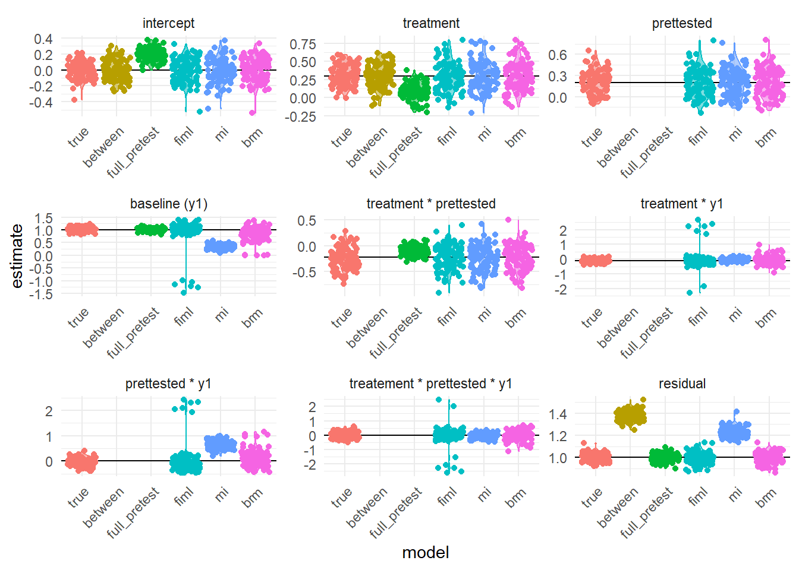

library(MASS)
library(effectsize)
library(mice)
library(mitml)
library(brms)
library(rstan)
library(mdmb)
library(tidyverse)
options(mc.cores = parallel::detectCores())
rstan_options(auto_write = TRUE)
## Set parameters
n <- 400 ## Sample Size
r2_aux <- .33 ## R2 of missing variable on Type B aux variables
K <- 3 ## number of aux variables
cor_mat <- diag(1, K, K) ## Correlations for aux variables (independent for now)
p_pre <- .4 ## proportion in measured condition
n_pre <- round(n * p_pre) ## N in measured condition
n_no_pre <- n - n_pre ## N in unmeasured condition
prettest <- c(rep(1, n_pre), rep(0, n_no_pre)) ## dummy variable for measurement
treatment <- rep(c(0,1), n/2)
beta1 <- .3 ## treatment of interest
beta2 <- .2 ## treatment effect of measurement
beta3 <- 1
beta4 <- -.75 * beta1
beta5 <- -.1
beta6 <- 0
beta7 <- 0
sigma <- 1
set.seed(1204021) # for reproducibility
## true values in DF (we will need to figure out how to handle this
## when we manipulate)
par_df <- data.frame(parameter = c(paste0("beta", 0:7), "sigma"),
definition = c("intercept","treatment", "prettested",
"baseline (y1)", "treatment * prettested",
"treatment * y1","prettested * y1",
"treatement * prettested * y1","residual"),
true_value = c(0, beta1, beta2, beta3, beta4, beta5,
beta6, beta7, sigma))
n_imps <- 100 ## set number of imputations for mice
iter <- 100
## What else should we add here?
## Freq. test stats information? p, t, se, CI
## Bayesian credible intervals? What other bayes stuff?
if (file.exists("simple sim results.RDS")) {
point_df <- readRDS("simple sim results.RDS")
} else {
make_df <- function(iter) {
data.frame(
# beta0
between_beta0 = rep(NA, iter),
full_pretest_beta0 = rep(NA, iter),
true_beta0 = rep(NA, iter),
fiml_beta0 = rep(NA, iter),
mi_beta0 = rep(NA, iter),
brm_beta0 = rep(NA, iter),
# beta1
between_beta1 = rep(NA, iter),
full_pretest_beta1 = rep(NA, iter),
true_beta1 = rep(NA, iter),
fiml_beta1 = rep(NA, iter),
mi_beta1 = rep(NA, iter),
brm_beta1 = rep(NA, iter),
# beta2
between_beta2 = rep(NA, iter),
full_pretest_beta2 = rep(NA, iter),
true_beta2 = rep(NA, iter),
fiml_beta2 = rep(NA, iter),
mi_beta2 = rep(NA, iter),
brm_beta2 = rep(NA, iter),
# beta3
between_beta3 = rep(NA, iter),
full_pretest_beta3 = rep(NA, iter),
true_beta3 = rep(NA, iter),
fiml_beta3 = rep(NA, iter),
mi_beta3 = rep(NA, iter),
brm_beta3 = rep(NA, iter),
# beta4
between_beta4 = rep(NA, iter),
full_pretest_beta4 = rep(NA, iter),
true_beta4 = rep(NA, iter),
fiml_beta4 = rep(NA, iter),
mi_beta4 = rep(NA, iter),
brm_beta4 = rep(NA, iter),
# beta5
between_beta5 = rep(NA, iter),
full_pretest_beta5 = rep(NA, iter),
true_beta5 = rep(NA, iter),
fiml_beta5 = rep(NA, iter),
mi_beta5 = rep(NA, iter),
brm_beta5 = rep(NA, iter),
# beta6
between_beta6 = rep(NA, iter),
full_pretest_beta6 = rep(NA, iter),
true_beta6 = rep(NA, iter),
fiml_beta6 = rep(NA, iter),
mi_beta6 = rep(NA, iter),
brm_beta6 = rep(NA, iter),
# beta7
between_beta7 = rep(NA, iter),
full_pretest_beta7 = rep(NA, iter),
true_beta7 = rep(NA, iter),
fiml_beta7 = rep(NA, iter),
mi_beta7 = rep(NA, iter),
brm_beta7 = rep(NA, iter),
# sigma
between_sigma = rep(NA, iter),
full_pretest_sigma = rep(NA, iter),
true_sigma = rep(NA, iter),
fiml_sigma = rep(NA, iter),
mi_sigma = rep(NA, iter),
brm_sigma = rep(NA, iter)
)
}
point_df <- make_df(iter)
lci_df <- make_df(iter)
uci_df <- make_df(iter)
t1 <- Sys.time() # save start time
for(i in 1:iter){
## Create auxiliary variable matrix
aux_matrix <- mvrnorm(n, rep(0, K), cor_mat) ## Create predictor matrix
resid <- sqrt(K * (1 - r2_aux)/r2_aux) ## Define residual of y
aux_matrix <- as.data.frame(aux_matrix)
names(aux_matrix) <- paste0("x", 1:ncol(aux_matrix))
y1 <- rnorm(n, rowSums(aux_matrix), resid) ## Define y as linear combo of predictors and error
sd_y <- sqrt((K + resid^2)) ## sd of y
y1_s <- y1/sd_y ## standardize y1 (for simplicity? idk)
y2 <- rnorm(n, beta1 * treatment +
beta2 * prettest + beta3 * y1_s +
beta4 * treatment * prettest +
beta5 * treatment * y1_s +
beta6 * prettest * y1_s +
beta7 * treatment * prettest * y1_s) ## define y2 as specified data generating process
y2_between <- rnorm(n, beta1 * treatment +
beta2 * 0 + beta3 * y1_s +
beta4 * treatment * 0 +
beta5 * treatment * y1_s +
beta6 * 0 * y1_s +
beta7 * treatment * 0 * y1_s) ## y2 for fully between subjects design
y2_pretest <- rnorm(n, beta1 * treatment +
beta2 * 1 + beta3 * y1_s +
beta4 * treatment * 1 +
beta5 * treatment * y1_s +
beta6 * 1 * y1_s +
beta7 * treatment * 1 * y1_s)
df <- data.frame(y1 = y1_s, y2 = y2, y2_between = y2_between,
y2_pretest = y2_pretest,
prettest = prettest, treatment = treatment)
lm_between <- lm(y2_between ~ treatment, df) ## model for no prettest
lm_pretest <- lm(y2_pretest ~ treatment * y1, df) ## model where all get prettest but measurement reactivity isn't (can't be) addressed
lm_true <- lm(y2 ~ treatment * prettest * y1, df) ## Theoretically correct model (if we could effects of measurement reactivity)
## Extract Results from "traditional" models
point_df$between_beta0[i] <- lm_between$coefficients[1]
point_df$between_beta1[i] <- lm_between$coefficients[2]
point_df$between_sigma[i] <- sigma(lm_between)
lci_df$between_beta0[i] <- confint(lm_between)[1,1]
lci_df$between_beta1[i] <- confint(lm_between)[2,1]
uci_df$between_beta0[i] <- confint(lm_between)[1,2]
uci_df$between_beta1[i] <- confint(lm_between)[2,2]
point_df$full_pretest_beta0[i] <- lm_pretest$coefficients[1]
point_df$full_pretest_beta1[i] <- lm_pretest$coefficients[2]
point_df$full_pretest_beta3[i] <- lm_pretest$coefficients[3]
point_df$full_pretest_beta4[i] <- lm_pretest$coefficients[4]
point_df$full_pretest_sigma[i] <- sigma(lm_pretest)
lci_df$full_pretest_beta0[i] <- confint(lm_pretest)[1,1]
lci_df$full_pretest_beta1[i] <- confint(lm_pretest)[2,1]
lci_df$full_pretest_beta3[i] <- confint(lm_pretest)[3,1]
lci_df$full_pretest_beta4[i] <- confint(lm_pretest)[4,1]
uci_df$full_pretest_beta0[i] <- confint(lm_pretest)[1,2]
uci_df$full_pretest_beta1[i] <- confint(lm_pretest)[2,2]
uci_df$full_pretest_beta3[i] <- confint(lm_pretest)[3,2]
uci_df$full_pretest_beta4[i] <- confint(lm_pretest)[4,2]
## Extract parameters from "true" theoretically correct model
point_df$true_beta0[i] <- lm_true$coefficients[1]
point_df$true_beta1[i] <- lm_true$coefficients[2]
point_df$true_beta2[i] <- lm_true$coefficients[3]
point_df$true_beta3[i] <- lm_true$coefficients[4]
point_df$true_beta4[i] <- lm_true$coefficients[5]
point_df$true_beta5[i] <- lm_true$coefficients[6]
point_df$true_beta6[i] <- lm_true$coefficients[7]
point_df$true_beta7[i] <- lm_true$coefficients[8]
point_df$true_sigma[i] <- sigma(lm_true)
lci_df$true_beta0[i] <-confint(lm_true)[1,1]
lci_df$true_beta1[i] <-confint(lm_true)[2,1]
lci_df$true_beta2[i] <-confint(lm_true)[3,1]
lci_df$true_beta3[i] <-confint(lm_true)[4,1]
lci_df$true_beta4[i] <-confint(lm_true)[5,1]
lci_df$true_beta5[i] <-confint(lm_true)[6,1]
lci_df$true_beta6[i] <-confint(lm_true)[7,1]
lci_df$true_beta7[i] <-confint(lm_true)[8,1]
uci_df$true_beta0[i] <-confint(lm_true)[1,2]
uci_df$true_beta1[i] <-confint(lm_true)[2,2]
uci_df$true_beta2[i] <-confint(lm_true)[3,2]
uci_df$true_beta3[i] <-confint(lm_true)[4,2]
uci_df$true_beta4[i] <-confint(lm_true)[5,2]
uci_df$true_beta5[i] <-confint(lm_true)[6,2]
uci_df$true_beta6[i] <-confint(lm_true)[7,2]
uci_df$true_beta7[i] <-confint(lm_true)[8,2]
## Set missing data data
df_impute <- df %>% mutate(y1 = ifelse(prettest == 0, NA, y1)) ## set planned missingness
## dataset for model-based maximum likelihood and brms imputation (has other variables)
df_ml_brm <- cbind(df_impute, aux_matrix) ## combine y1 with aux vars
## Maximum Likelihood
intg.nods <- seq(min(df_ml_brm$y1[!is.na(df_ml_brm$y1)]), max(df_ml_brm$y1[!is.na(df_ml_brm$y1)]), length.out = 30) ## set integration nodes
## factorized models
model.s1 <- list("model" = "linreg", "formula" = x1 ~ x2 + x3 + y2 + y1)
model.s2 <- list("model" = "linreg", "formula" = x2 ~ x3 + y2 + y1)
model.s3 <- list("model" = "linreg", "formula" = x3 ~ y2 + y1)
model.s4 <- list("model" = "linreg", "formula" = y2 ~ treatment * prettest * y1)
model.s5 <- list("model" = "linreg", "formula" = y1 ~ 1,
nodes = intg.nods)
## separate "extra" models
extra.mods <- list(model.s1 = model.s1,
model.s2 = model.s2,
model.s3 = model.s3,
model.s5 = model.s5)
## estimation
ml_result <- frm_em(dat = df_ml_brm, dep = model.s4,
ind = extra.mods)
point_df$fiml_beta0[i] <- ml_result$partable$est[1]
point_df$fiml_beta1[i] <- ml_result$partable$est[2]
point_df$fiml_beta2[i] <- ml_result$partable$est[3]
point_df$fiml_beta3[i] <- ml_result$partable$est[4]
point_df$fiml_beta4[i] <- ml_result$partable$est[5]
point_df$fiml_beta5[i] <- ml_result$partable$est[6]
point_df$fiml_beta6[i] <- ml_result$partable$est[7]
point_df$fiml_beta7[i] <- ml_result$partable$est[8]
point_df$fiml_sigma[i] <- ml_result$partable$est[9]
lci_df$fiml_beta0[i] <- ml_result$partable$lower95[1]
lci_df$fiml_beta1[i] <- ml_result$partable$lower95[2]
lci_df$fiml_beta2[i] <- ml_result$partable$lower95[3]
lci_df$fiml_beta3[i] <- ml_result$partable$lower95[4]
lci_df$fiml_beta4[i] <- ml_result$partable$lower95[5]
lci_df$fiml_beta5[i] <- ml_result$partable$lower95[6]
lci_df$fiml_beta6[i] <- ml_result$partable$lower95[7]
lci_df$fiml_beta7[i] <- ml_result$partable$lower95[8]
lci_df$fiml_sigma[i] <- ml_result$partable$lower95[9]
uci_df$fiml_beta0[i] <- ml_result$partable$upper95[1]
uci_df$fiml_beta1[i] <- ml_result$partable$upper95[2]
uci_df$fiml_beta2[i] <- ml_result$partable$upper95[3]
uci_df$fiml_beta3[i] <- ml_result$partable$upper95[4]
uci_df$fiml_beta4[i] <- ml_result$partable$upper95[5]
uci_df$fiml_beta5[i] <- ml_result$partable$upper95[6]
uci_df$fiml_beta6[i] <- ml_result$partable$upper95[7]
uci_df$fiml_beta7[i] <- ml_result$partable$upper95[8]
uci_df$fiml_sigma[i] <- ml_result$partable$upper95[9]
## dataset for agnostic mice imputation (ignoring other variables)
df_mice <- cbind(df_impute %>% select(y1), aux_matrix) ## combine y1 with aux vars
## Multiple imputation
mimps <- mice(df_mice, m = n_imps, printFlag = FALSE) ## mice imputation
pmm_imps <- complete(mimps, action = "long") %>%
mutate(y2 = rep(df_impute$y2, n_imps),
treatment = rep(df_impute$treatment, n_imps),
prettest = rep(df_impute$m, n_imps)) ## add variables to imputed dataset
pmm_imps_list <- as.mitml.list(split(pmm_imps, pmm_imps$.imp)) ## split datasets
analysis_pmm <- with(pmm_imps_list, lm(y2 ~ treatment * prettest * y1)) ## imputed model
lm_impute <- testEstimates(analysis_pmm, extra.pars = TRUE)
point_df$mi_beta0[i] <- as.data.frame(lm_impute$estimates)$Estimate[1]
point_df$mi_beta1[i] <- as.data.frame(lm_impute$estimates)$Estimate[2]
point_df$mi_beta2[i] <- as.data.frame(lm_impute$estimates)$Estimate[3]
point_df$mi_beta3[i] <- as.data.frame(lm_impute$estimates)$Estimate[4]
point_df$mi_beta4[i] <- as.data.frame(lm_impute$estimates)$Estimate[5]
point_df$mi_beta5[i] <- as.data.frame(lm_impute$estimates)$Estimate[6]
point_df$mi_beta6[i] <- as.data.frame(lm_impute$estimates)$Estimate[7]
point_df$mi_beta7[i] <- as.data.frame(lm_impute$estimates)$Estimate[8]
point_df$mi_beta7[i] <- as.data.frame(lm_impute$estimates)$Estimate[8]
point_df$mi_sigma[i] <- sqrt(lm_impute$extra.pars)
lci_df$mi_beta0[i] <-as.data.frame(confint(lm_impute))$`2.5 %`[1]
lci_df$mi_beta1[i] <-as.data.frame(confint(lm_impute))$`2.5 %`[2]
lci_df$mi_beta2[i] <-as.data.frame(confint(lm_impute))$`2.5 %`[3]
lci_df$mi_beta3[i] <-as.data.frame(confint(lm_impute))$`2.5 %`[4]
lci_df$mi_beta4[i] <-as.data.frame(confint(lm_impute))$`2.5 %`[5]
lci_df$mi_beta5[i] <-as.data.frame(confint(lm_impute))$`2.5 %`[6]
lci_df$mi_beta6[i] <-as.data.frame(confint(lm_impute))$`2.5 %`[7]
lci_df$mi_beta7[i] <-as.data.frame(confint(lm_impute))$`2.5 %`[8]
uci_df$mi_beta0[i] <-as.data.frame(confint(lm_impute))$`97.5 %`[1]
uci_df$mi_beta1[i] <-as.data.frame(confint(lm_impute))$`97.5 %`[2]
uci_df$mi_beta2[i] <-as.data.frame(confint(lm_impute))$`97.5 %`[3]
uci_df$mi_beta3[i] <-as.data.frame(confint(lm_impute))$`97.5 %`[4]
uci_df$mi_beta4[i] <-as.data.frame(confint(lm_impute))$`97.5 %`[5]
uci_df$mi_beta5[i] <-as.data.frame(confint(lm_impute))$`97.5 %`[6]
uci_df$mi_beta6[i] <-as.data.frame(confint(lm_impute))$`97.5 %`[7]
uci_df$mi_beta7[i] <-as.data.frame(confint(lm_impute))$`97.5 %`[8]
## brms: first time we fit and save model, afterwards we update to save compile time
if(i == 1){
bform <- bf(x1 ~ x2 + x3 + y2 + mi(y1)) +
bf(x2 ~ x3 + y2 + mi(y1)) +
bf(x3 ~ y2 + mi(y1)) +
bf(y2 ~ treatment * prettest * mi(y1)) +
bf(y1 | mi() ~ 1) +
set_rescor(FALSE)
brm1 <- brm(bform, df_ml_brm,
save_model = "main_effect_model.stan",
silent = TRUE)
}
else{
brm1 <- update(brm1, newdata = df_ml_brm,
silent = TRUE)
}
sumb1 <- summary(brm1)
point_df$brm_beta0[i] <- summary(brm1)$fixed["y2_Intercept","Estimate"]
point_df$brm_beta1[i] <- summary(brm1)$fixed["y2_treatment","Estimate"]
point_df$brm_beta2[i] <- summary(brm1)$fixed["y2_prettest","Estimate"]
point_df$brm_beta3[i] <- summary(brm1)$fixed["y2_miy1","Estimate"]
point_df$brm_beta4[i] <- summary(brm1)$fixed["y2_treatment:prettest","Estimate"]
point_df$brm_beta5[i] <- summary(brm1)$fixed["y2_miy1:treatment","Estimate"]
point_df$brm_beta6[i] <- summary(brm1)$fixed["y2_miy1:prettest","Estimate"]
point_df$brm_beta7[i] <- summary(brm1)$fixed["y2_miy1:treatment:prettest","Estimate"]
point_df$brm_sigma[i] <- summary(brm1)$spec_pars["sigma_y1", "Estimate"]
lci_df$brm_beta0[i] <- summary(brm1)$fixed["y2_Intercept","l-95% CI"]
lci_df$brm_beta1[i] <- summary(brm1)$fixed["y2_treatment","l-95% CI"]
lci_df$brm_beta2[i] <- summary(brm1)$fixed["y2_prettest","l-95% CI"]
lci_df$brm_beta3[i] <- summary(brm1)$fixed["y2_miy1","l-95% CI"]
lci_df$brm_beta4[i] <- summary(brm1)$fixed["y2_treatment:prettest","l-95% CI"]
lci_df$brm_beta5[i] <- summary(brm1)$fixed["y2_miy1:treatment","l-95% CI"]
lci_df$brm_beta6[i] <- summary(brm1)$fixed["y2_miy1:prettest","l-95% CI"]
lci_df$brm_beta7[i] <- summary(brm1)$fixed["y2_miy1:treatment:prettest","l-95% CI"]
lci_df$brm_sigma[i] <- summary(brm1)$spec_pars["sigma_y1", "l-95% CI"]
uci_df$brm_beta0[i] <- summary(brm1)$fixed["y2_Intercept","u-95% CI"]
uci_df$brm_beta1[i] <- summary(brm1)$fixed["y2_treatment","u-95% CI"]
uci_df$brm_beta2[i] <- summary(brm1)$fixed["y2_prettest","u-95% CI"]
uci_df$brm_beta3[i] <- summary(brm1)$fixed["y2_miy1","u-95% CI"]
uci_df$brm_beta4[i] <- summary(brm1)$fixed["y2_treatment:prettest","u-95% CI"]
uci_df$brm_beta5[i] <- summary(brm1)$fixed["y2_miy1:treatment","u-95% CI"]
uci_df$brm_beta6[i] <- summary(brm1)$fixed["y2_miy1:prettest","u-95% CI"]
uci_df$brm_beta7[i] <- summary(brm1)$fixed["y2_miy1:treatment:prettest","u-95% CI"]
uci_df$brm_sigma[i] <- summary(brm1)$spec_pars["sigma_y1", "u-95% CI"]
print(i)
}
t2 <- Sys.time() # save finish time
t2 - t1
saveRDS(point_df, "simple sim results.RDS")
}Basic Measurement Reactivity Sim
Model Setup
Let’s imagine we have the following model for a treatment we want to estimate for a prettest posttest design
If we have measurement reactivity, the problem is that the act of taking the measurement at time 1 (
A standard solution might be to omite the prettest and just do a between subjects comparison without any prettest as a covariate
One issue with this approach is it is possible that baseline scores interact with the treatment, and that becomes impossible to to measure
Our approach uses a planned missingness design, where participants are randomized into a design where
I sketched out a simple simulation with the following data generating model
The data generating process is based on
where
In the first version of the simple simulation I set
Here is each parameter as recovered by each model (where possible)
point_df_long <- point_df %>% pivot_longer(1:ncol(.), names_to = "variable",
values_to = "estimate") %>%
mutate(
model = str_remove(variable, "_[^_]*$"),
parameter = str_extract(variable, "[^_]+$")) %>% left_join(par_df) %>%
mutate(bias = estimate - true_value)Joining with `by = join_by(parameter)`point_df_long$model <- factor(point_df_long$model, levels = c("true","between",
"full_pretest",
"fiml","mi","brm"))
point_df_long$definition <- factor(point_df_long$definition, levels = unique(point_df_long$definition))
ggplot(point_df_long, aes(x = model, y = estimate, fill = model, color = model)) +
geom_hline(aes(yintercept = true_value)) +
facet_wrap(. ~ definition, nrow = 3, scales = "free") +
theme_minimal() +
geom_violin(alpha = .5) + geom_jitter() + theme(legend.position = "none",
axis.text.x = element_text(angle = 45, hjust = 1)
)Warning: Removed 1000 rows containing non-finite outside the scale range
(`stat_ydensity()`).Warning: Removed 1000 rows containing missing values or values outside the scale range
(`geom_point()`).